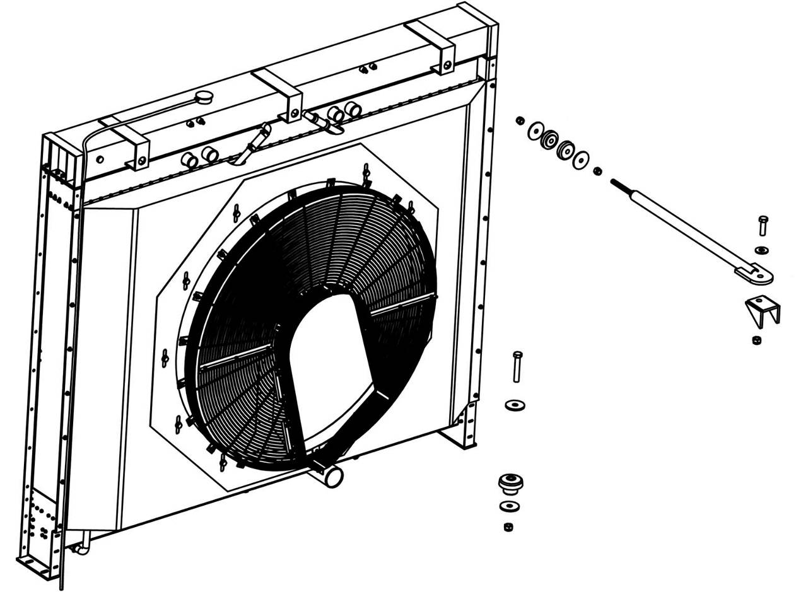
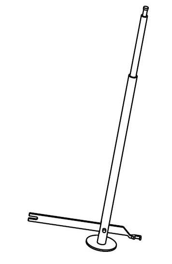
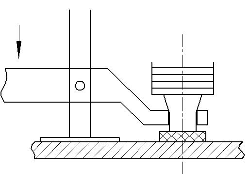
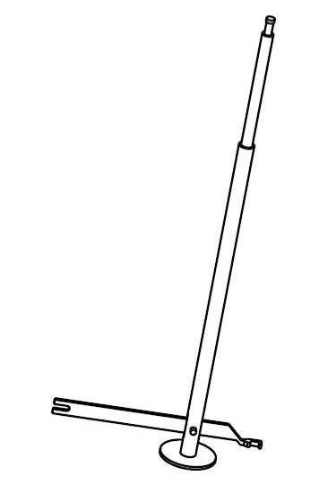
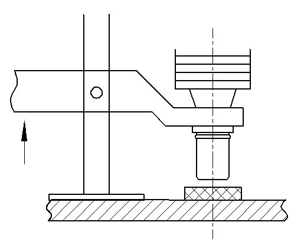

散热器安装. · RADIATOR ASSY
Модуль охлаждения радиатора
Описание и расположение
Охлаждающий модуль включает в себя радиаторный узел, ветровый кожух, ветровое кольцо, решетку вентилятора и кожух ремни. Теплоотвод включает в себя тепловые трубы, установленные на верхней и нижней частях водяного бака, и ленту теплоотвода, приваренную к теплоотводу. Охлаждающий модуль установлен на передней части карьерного самосвала, между решеткой радиатора и вентилятором.
Управление
Охлаждающая жидкость, охлаждаемая двигателем, поступает в радиатор от выхода термостата в верхнюю часть двигателя, а затем течет через теплоотвод на радиаторе в нижнюю часть бака. Охлаждающая жидкость передает тепло на телоотвод и сетки радиатора, передает тепло в воздух через теплоотвод и сетки радиатора.
Охлаждающая жидкость проходит через выпускное отверстие под водяным баком, вытекает из радиатора и возвращается к двигателю для следующего цикла.
Конструкция теплоотвода позволяет каждому теплоотводу работать независимо. Если теплоотвод поврежден или заблокирован, ее можно удалить или заменить отдельно, не снимая весь узел радиатора.
Техническое обслуживание и регулировка
Регулярное техническое обслуживание включает в себя следующие шаги:
1. Проверить уровень охлаждающей жидкости в радиаторе в соответствии с инструкциями в разделе 040 - "Система охлаждения в энергосистеме".
2. Проверить вне радиатора на наличие накопленной грязи и отходов. Эти примеси уменьшают теплоотдачу радиатора. При необходимости Очистить радиатор.
a. Использовать воздух под высоким давлением, чтобы продуть свободную грязь, направление воздушного потока противоположно направлению потока воздуха во время работы, а затем сдуть по обратному направлению.
ВАЖНОЕ ПРИМЕЧАНИЕ: воздушный поток можно распылять только перпендикулярно к элементу теплоотвода, и нельзя наклонять.
b. Промыть горячей водой под высоким давлением макс. 1200 psi(8275kPa)..
(1) Сначала поместите сопло близко к пластине на верхней части, промыть в небольшом диапазоне.
ВАЖНОЕ ПРИМЕЧАНИЕ: водяной поток можно распылять только перпендикулярно к элементу теплоотвода, и нельзя наклонять.
(2) Продолжать промывать сверху до дна, пока выброшенная вода не станет чистой.
(3) Повторить вышеуказанные шаги в обратном порядке.
ВАЖНОЕ ПРИМЕЧАНИЕ: высокощелочное мыло, коррозионные газированные растворы или химические вещества могут вызывать коррозию флюса. Если трубка погружена в такой раствор, отрицательный эффект будет нанесен на связующее вещество для покрытия между радиатором и тепловой трубкой.
3. Проверить осаждение пыли и мусора внутри радиатора. Эти примеси уменьшат теплоотвод теплоотвода и его необходимо очистить.
ВАЖНОЕ ПРИМЕЧАНИЕ: коррозия, образование накипи и другие формы загрязнения оказывают значительное неблагоприятное воздействие на работу радиатора и всей системы охлаждения. Проконсультируйтесь с поставщиками антифриза и производителями двигателей, чтобы устранить или уменьшить этот неблагоприятный эффект
4. Проверить входные и выходные фитинги и шланги. Если они свободны или повреждены, отремонтировать или замените их по мере необходимости.
5. Проверить кожухи вентилятора, защитные ограждения и другие принадлежности, установленные на радиаторе. Они должны быть надежно прикреплены к радиатору и в хорошем состоянии, отремонтировать или замените по мере необходимости
6. Проверить рычаги тяги. Они должны быть равномерно натянуты, чтобы не исказить теплоотвод.
7. Проверить точки крепления. Резиновая подушка должна быть полной и гибкой. Нижняя точка крепления должна быть надежной. В случае повреждения, по мере необходимости отремонтировать или замените.
Снятие
Примечание: при замене отдельного сердечника не надо снимать весь радиатор, можно заменять его, не снимая радиатор. Для конкретных процедур см. инструкции по разборке и сборке.
Шаги удаления радиатора следующие:
1. Остановить карьерный самосвал в безопасном месте, кроме использования фрикционной системы торможения, еще нужно подложить клинья под колеса.
2. Отпустить давление системы охлаждения, как описано в разделе 040 -"Энергосистема".
3. Сить охлаждающую жидкость из радиатора и узла двигателя.
4. Снять все шланги, прикрепленные к радиатору. Отметить шланг для легкой переустановки.
5. Снять узел защитного кожуха, как описано в разделе 020 «Структурные компоненты».
6. Снять защитный кожух двигателя и вентиляторную решетку.
7. Снять узел рычага тяги в верхней части радиатора.
8. Поднять узел радиатора с помощью подъемного оборудования.
9. Снять крепежные детали, которые крепят радиатор к раме.
10. Снять радиаторный узел с карьерного самосвала, будить осторожно, не повредить сердечник радиатора и вентилятор.
Примечание: теплоотвод сердечника радиатора и пластины радиатора очень подвержены повреждениям. Поэтому будить осторожны при снятии/ установке радиатора.
Разборка
Ниже приведены шаги по снятию одного теплоотвода из радиатора:
1. Нагреть уплотнительную резиновую втулку на обоих концах теплоотвода горячей водой.
2. Использовать рукоятку инструмента для снятия (рис.2), чтобы место рядом с резиновой втулкой между двумя концами теплоотвода защелкивалось, а теплоотвод слегка вращается. (может быть проложен мягкой тканью, чтобы предотвратить повреждение из -за застревания теплоотвода.)
3. После того, как теплоотвод ослаблен, поместите основание столба инструмента для снятия удержать нижнюю основную плату, челюсти застряли на нижнем конце теплоотвода, как показано на рисунке 3.
4. Рукоятка нажата вниз, а челюсти поднимаются вверх, чтобы вытащить теплоотвод из нижней резиновой втулки.
5. Перемещать инструмент, держите теплоотвод рукой и вытащите ее из верхней резиновой втулки и снимите прокладку.
6. Повторить описанные выше шаги, чтобы снять оставшиеся теплоотводы.
Ниже приведены шаги по установке одного теплоотвода:
1. Поместить верхнюю и нижнюю втулку на основную плату (установите резиновую втулку с внутренним отверстием с канавкой на нижюю часть).
2. Нанесить вазелин на два конца тепловоотвода (не применяйте масло, масло приведет к старению резины).
3. Держать теплоотвод рукой и вставить верхний конец (без выступа) в резиновую втулку.
4. Выверить нижний конец теплоотвода к нижней резиновой втулке и поместите верхний конец столба установочного инструмента (рис.4) на верхнюю основную плату и поместите челюсти установочного инструмента в положение, показанное на рисунке 5 (верхняя сторона выступа).
5. Поднять рукоятку вверх , челюсти вниз, нажмите теплоотвод в резиновую втулку(пакет ударных входит в канавку резиновой втулки).
6. Повторить описанные выше шаги для установки оставшихся тепловых труб.
Осмотр и ремонт
Шаги ремонта следующие:
1. Проверить отверстие основной платы на наличие повреждений и отремонтировать или замените их по мере необходимости.
Примечание: использовать электрическую дрель, воздушную дрель или аналогичное устройство для привода металлической щетки, удалите золы из отверстия.
2. Удалить все посторонние предметы из отверстия основной плате.
3. Отремонтировать или заменить все поврежденные или протекающие теплоотводы, проверить все теплоотводы, ранее отремонтированные из - за утечек, перед повторной установкой.
4. Проверить состояние пластин или радиаторов. Повреждения или отложения уменьшают эффективность теплопередачи и теплоотвода, а также очищаются или заменяются по мере необходимости.
a. Если предыдущий теплоотвод переустановлен, необходимо удалить посторонние предметы в порту. Рекомендуется использовать метод полировки, медную полироль и другие методы полировки.
b. Если полировка не удаляет посторонние предметы:
(1) Снять металл металлическим колесом, стараясь не поцарапать порт теплоотвода.
(2) Полить поверхность методом полировки, описанным на шаге а, чтобы облегчить установку и герметизацию.
Установка
Установить узел радиатора в обратном снятию порядке
Силовая система- модуль охлаждения радиатора
040-0060
Силовая система- модуль охлаждения радиатора
040-0060
2
5
Силовая система- модуль охлаждения радиатора
040-0060
1
Силовая система- модуль охлаждения радиатора
040-0060
Силовая система- модуль охлаждения радиатора
040-0060
2
3
Спецификация1Тяга радиатора4Гайка7Прокладка10Прокладка2Кронштейн5Прокладка8Гайка11Болт3Болт 6Амортизационная прокладка9Амортизационная прокладка12Радиатор в сбореРис. 1. Установка радиатора в сборе
12
8
7
6
7
8
1
3
5
2
4
11
10
9
10
4
Рис.2 Инструмент для демонтажа теплоотводящей трубки
Рис. 3 Снятие радиатора
Рис. 4 Инструменты для установки радиатора
Рис. 5 Установка радиатора
Иллюстрации




